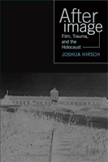

<body bgcolor="#FFFFFF" text="#000000" link="#0000FF" vlink="#CC0000" alink="#CC0000"><center><hr width="350" size="1" align="center" noshade>How films on the Holocaust gave birth to a new cinematic genre<hr width="350" size="1" align="center" noshade><p><a href="https://cdcshoppingcart.uchicago.edu/Cart/ChicagoBook.aspx?ISBN=9781592132089&&PRESS=temple" target="_top">Buy this book!</a> | <a href="https://cdcshoppingcart.uchicago.edu/Cart/Cart.aspx?PRESS=temple" target="_top">View Cart</a> | <a href="https://cdcshoppingcart.uchicago.edu/Cart/Cart.aspx?PRESS=temple" target="_top">Check Out</a></p><p></p></center><!--none//--><h1>Afterimage</h1>
<H2>Film, Trauma, and the Holocaust</H2>
<h3>Joshua Hirsch</h3>
<P>cloth 1-59213-208-1 $80.50, Dec 03, <FONT COLOR=#990033>Available</FONT>
<br>paper 1-59213-209-X $29.95, Dec 03, <FONT COLOR=#990033>Available</FONT>
<br>Electronic Book 1-43990-395-6 $29.95 <FONT COLOR=#990033>Available</FONT>
<BR> 232 pp
6x9
23&nbsp;halftones
</P><BLOCKQUOTE><I>"While much has been written on the question of film and the Holocaust, Joshua Hirsch's thoughtful and lucid analysis breaks new ground. In the course of theorizing a posttraumatic cinema, he raises important issues regarding the politics of representation, the nature of documentary, and, most compellingly, the relationship between movies and history."</i>
<br>&#151<b>J. Hoberman</b>, film critic, <i>The Village Voice</i> and author of <i><a href="1266_reg.html" target="_top">Bridge of Light: Yiddish Film Between Two Worlds</a></i><i></I></BLOCKQUOTE>
<p>The appearance of Alain Resnais' 1955 French documentary <i>Night and Fog</i> heralded the beginning of a new form of cinema, one that used the narrative techniques of modernism to provoke a new historical consciousness. <i>Afterimage</i> presents a theory of posttraumatic film based on the encounter between cinema and the Holocaust. Locating its origin in the vivid shock of wartime footage, <i>Afterimage</i> focuses on a group of crucial documentary and fiction films that were pivotal to the spread of this cinematic form across different nations and genres.
<p>Joshua Hirsch explores the changes in documentary brought about by cinema verite, culminating in Shoah. He then turns to the appearance of a fictional posttraumatic cinema, tracing its development through the vivid flashbacks in Resnais' <i>Hiroshima, mon amour</i> to the portrayal of pain and memory in <i>The Pawnbroker</i>. He excavates a posttraumatic autobiography in three early films by the Hungarian Istv�n Szab�. Finally, Hirsch examines the effects of postmodernism on posttraumatic cinema, looking at <i>Schindler's List</i> and a work about a different form of historical trauma, <i>History and Memory</i>, a videotape dealing with the internment of Japanese Americans during the Second World War.
<p>Sweeping in its scope, <i>Afterimage</i> presents a new way of thinking about film and history, trauma and its representation.
<BR>&nbsp;<h2>Excerpt</h2><P>Excerpt available at <a href="http://www.temple.edu/tempress">www.temple.edu/tempress</a></p>
<BR>&nbsp;<h2>Reviews</h2>
<p><i>"Film and the Holocaust are initially linked in footage of a massacre of Jews in Latvia filmed by Reinhard Wiener in 1941. From that short set of images the medium becomes the primary means of the Western representation and comprehension of this incomprehensible moment in history. From documentaries to feature films, in Europe and in Hollywood, the Holocaust became one of the central topics of the modern cinema. Joshua Hirsch illustrates this brilliantly in his book on the image and afterimage of the Holocaust. It is readable, intelligent, and leaves room for much thought and contemplation."</i>
<br>&#151<b>Sander L. Gilman</b>, author of <i>Jewish Frontiers</i>
<p><i>"This timely book explores in depth the way a set of exemplary documentary and fictional films contributed to a posttraumatic historical consciousness in the aftermath of the Holocaust. The value of Hirsch's well-informed and critically self-reflective account is enhanced by the fact that he treats films that crossed the boundary between avant-garde and mainstream culture, not only inevitable reference points such as </i>Shoah<i> and </i>Night and Fog<i> but also less discussed films such as </i>The Pawnbroker<i> and the important work of Istv�n Szab�."</i>
<br>&#151<b>Dominick LaCapra</b>, Bryce and Edith M. Bowmar Professor of Humanistic Studies, Cornell University
<p><i>"[E]xtensive and exhaustive."</i>
<br>&#151<b><i>Multicultural Review</i></b>
<p><i>"Hirsch blends a sophisticated formal analysis with a deep understanding of the cultural and philosophical implications of the films he considers... [h]is work provides an exciting avenue for wider studies of Holocaust art."</i>
<br>&#151<b><i>Journal of Jewish Studies</i></b>
<p><i>"Hirsch's superb command of Holocaust history, archival film collections, and contemporary theories of modernism and post-traumatic historical consciousness informs his insightful analyses of how certain cinema practices can facilitate understanding between groups and so help heal the effect of traumatic experience.... </i>Afterimage<i> exemplifies the merits of film writing based on in-depth knowledge of cinema history, theory, and criticism. The clarity and originality of this book are evident throughout...</i>Afterimage<i> contributes substantially to film studies and surely also to the field's reputation in a wider arena. Coherent and affecting, the book remains on the mind."</i>
<br>&#151;<b><i>Film Quarterly</i></b>
<p><i>"</i>Afterimage<i> will be useful for film scholars and literary scholars for its detailed analysis of narrative techniques. The author's critical summary of trauma theory in the introduction familiarizes the reader with the prevalent terminology, while offering a persuasive argument for and approach to reading films as texts. Hirsch's book delivers a compelling study of creative techniques used by a number of postwar filmmakers to respond to the crisis of representation that the Holocaust brought about, while making the term "posttraumatic" applicable and useful for many other personal and historical experiences."</i>
<br>&#151<b><i><a href=" http://www.h-net.org/reviews/showrev.cgi?path=158961164725292" target="new">H-Net</i></b>
<BR>&nbsp;<h2>Contents</h2><P>
<p>Preface
<br>Acknowledgments
<br>1. Introduction to Film, Trauma, and the Holocaust
<br>2. <i>Night and Fog</i> and the Origins of Posttraumatic Cinema
<br>3. <i>Shoah</i> and the Posttraumatic Documentary after Cin�ma V�rit�
<br>4. <i>The Pawnbroker</i> and the Posttraumatic Flashback
<br>5. Istv�n Szab� and Posttraumatic Autobiography
<br>6. Postmodernism, the Second Generation, and Cross-Cultural Posttraumatic Cinema
<br>Notes
<br>Works Cited
<br>Index
</P><BR>&nbsp;<H2>About the Author(s)</H2>
<table><tr><td valign="top"><img src="/tempress/authors/1653_au.gif" height="90" width="75"></td><td width="100%" valign="middle"><p><b>Joshua Hirsch</b> is visiting lecturer in Film and Electronic Arts at the California State University, Long Beach.</P></td></tr></table>
<BR><H2>Subject Categories</H2>
<p><A HREF="/tempress/mass_media.html" TARGET="_top">Mass Media and Communications</a>
<BR><A HREF="/tempress/philosophy.html" TARGET="_top">Philosophy and Ethics</a>
<BR><A HREF="/tempress/jewish.html" TARGET="_top">Jewish Studies</a>
</p>
<BR><h2 class="inpageheading">In the series</H2>
<P><I><a href="http://www.temple.edu/tempress/emerging_media.html" onMouseOver="window.status='Click for other books in this series!'; return true;" onMouseOut="window.status=''; return true;" target="_top">Emerging Media: History, Theory, Narrative</a></i>, edited by Daniel Bernardi.
</p><p>Moving beyond the reductive and ambiguous conclusions that new media is either utopian or dystopian, this series will situate emerging media in the context of history, art, and theory. Books in the series will address the fact that new media is shaped by specific historic currents, from the history of communication technologies, to the history of mass entertainment, to the tradition-bound practices of multimedia design. These historical underpinnings of new media forms will also engage the insights of artists, storytellers, and theorists.</p>
<p align="center"><a href="https://cdcshoppingcart.uchicago.edu/Cart/ChicagoBook.aspx?ISBN=9781592132089&&PRESS=temple" target="_top">Buy this book!</a> | <a href="https://cdcshoppingcart.uchicago.edu/Cart/Cart.aspx?PRESS=temple" target="_top">View Cart</a> | <a href="https://cdcshoppingcart.uchicago.edu/Cart/Cart.aspx?PRESS=temple" target="_top">Check Out</a></p><p><font face="Arial" size="1"><a href="copyright.html" onMouseOver="window.status='Web Copyright Policy';return true;" onMouseOut="window.status=''" title="Web Copyright Policy">&copy;</a> 2015 <a href="http://www.temple.edu" target="new" onMouseOver="window.status='Link to Temple University home page';return true;" onMouseOut="window.status=''" title="Link to Temple University home page">Temple University</a>. All Rights Reserved. http://www.temple.edu/tempress/titles/1653_reg.html</font></p>